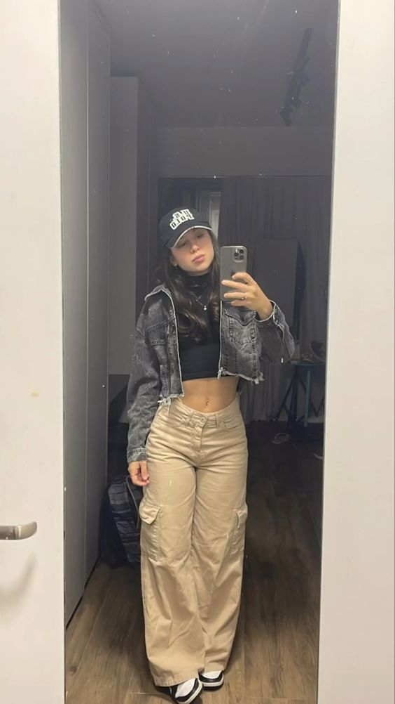

Calça cargo!
A calça cargo é uma peça que está em alta, podemos combiná-la com um cropped, camisetão e/ou jaqueta.
Comum utilizar para o dia-a-dia, escola, shopping... e lugares que não é necessário se preocupar tanto com a elegância.
Nos pés, damos a preferência para os tênis, de divesos estilos.

Vestido!
O vestido é uma peça que pensamos que podemos utilizar apenas em ocasiões especiais, mas não!
É um look fofo, e hoje em dia podemos adquirir para usar em vários eventos.
Dia de compras, trabalho, shopping, piquenique...
Calça de cintura alta!
Podemos utilizá-la principalmente no inverno/outono. Cachecol, anéis, colares e bolsas, para complementar.
A calça de cintura alta pode ser combinada com diversos estilos.
Temos como opção usar um blusão ou suéter por cima, nos pés, um calçado confortável.